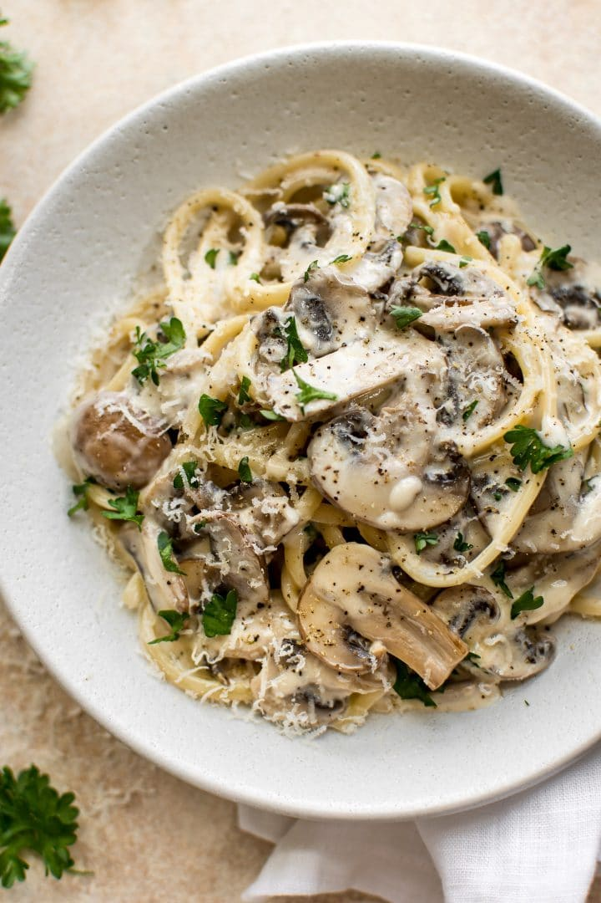

Creamy Mushroom Pasta Recipe

Description
Make this creamy mushroom pasta dish on days when you need a big bowl of comfort.
Cream, parmesan, white wine, lemon zest and parsley make this a rich and
flavourful dinner.
Ingredients
- 2 tbsp olive oil
- 1 tbsp butter
- 1 onion, finely chopped
- 250g button chestnut mushroom, sliced
- 1 garlic clove, finely grated
- 100ml dry white wine
- 200ml double cream
- 1 lemon, zest only
- 200g parmesan (or vegetarian alternative), grated, plus extra to serve
- 300g tagliatelle or linguini
- ½ small bunch parsley, finely chopped
Steps
- Heat the oil and butter in a medium saucepan. Fry the onion over a low heat
for 10 mins or until softened and translucent.
- Add the mushrooms and cook for 10 mins over a medium heat. Add the garlic
and cook for 2 mins. Add the wine and bring to a simmer, reduce the liquid by
half.
- Add the double cream and bring to a simmer, then add the lemon zest and
parmesan. Season with salt and plenty of black pepper.
- Meanwhile, cook the pasta following pack instructions. Reserve 100ml of the
pasta water. Toss the pasta in the pan with the creamy sauce and enough of the
reserved water to loosen. Stir through the parsley, divide into bowls and top
with extra cheese, if you like.